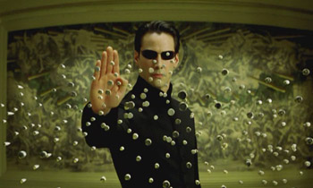
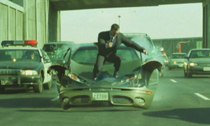
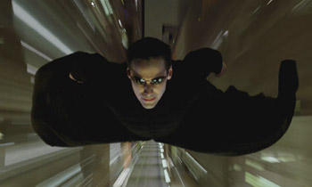

Filmfront
zaterdag 26 april 2003 | Kultuur
Ach, een mens kan niet enkel van intellectuele documentaires en alternatieve films leven (kuch). Af en toe heeft hij ook eens nood aan wat vers geweld uit Hollywood.
Hij sprak en zijn woorden werden bewaarheid. Arnold is back! De jongste trailer van Terminator III lijkt een gezellig vervolg te worden op één van mijn number-one all-time favorites. De begeleidende muziek van deze trailer werd ook al eens gebruikt door Peter Jackson in die van The Fellowship of the Ring. Enig zoekwerk vertelt me dat het om een nummer gaat van Christopher Field, ‘Gothic Power’. Als iemand dat weet te vinden in een onversneden versie, dat zou geweldig zijn.
Maar niets kan u voorbereiden op wat er komt na The Matrix. Deze film bekijk ik vandaag nog steeds met evenveel ontzag als drie jaar geleden. En na het zien van de fullscreen trailer van het eerste vervolgverhaal (100Mb!) was ik toch even sprakeloos. Waarom staat ‘The Matrix Reloaded’ trouwens niet in het lijstje op de Quicktime-pagina van Apple?
Release dates Benelux:
Terminator III: 6 augustus
The Matrix Reloaded: 16 mei (jaja, nog maar twee weekjes!)



Bert D. op 27 april 2003
Die dumd and dumber-er ziet er inderdaad maar een flauw vervolgje uit. De eerste vond ik wel redelijk goed. Nostalgie, weet je wel…